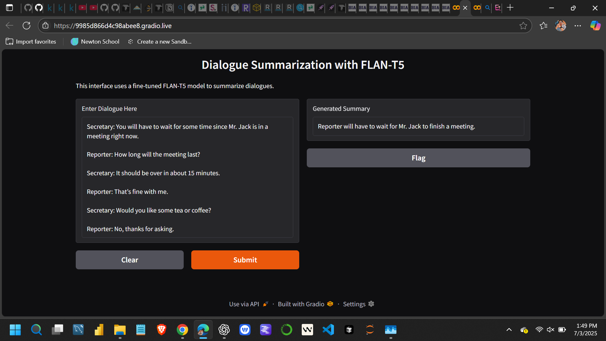
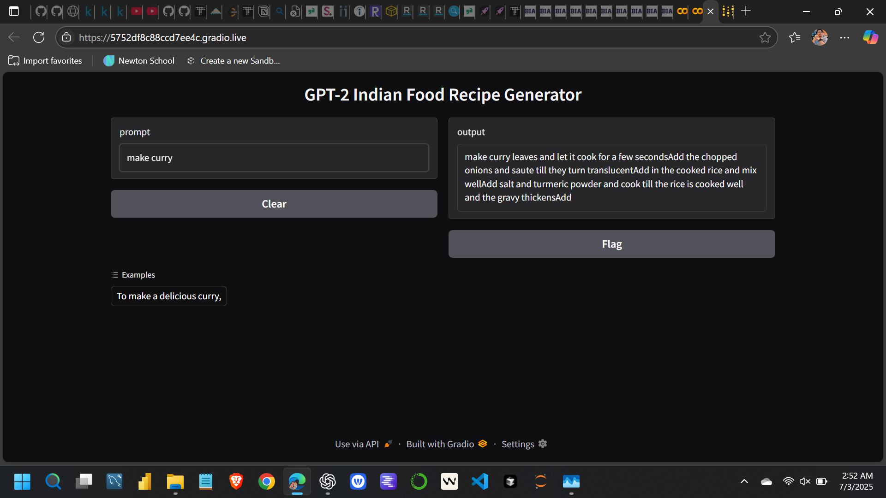
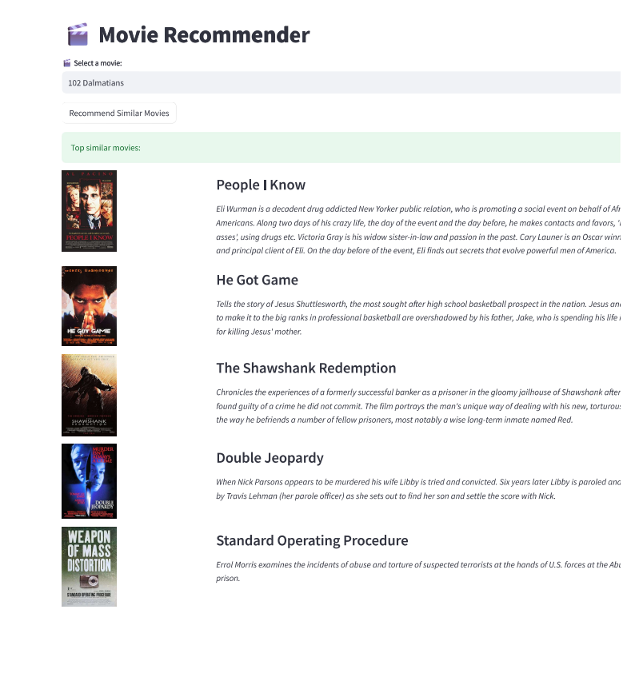
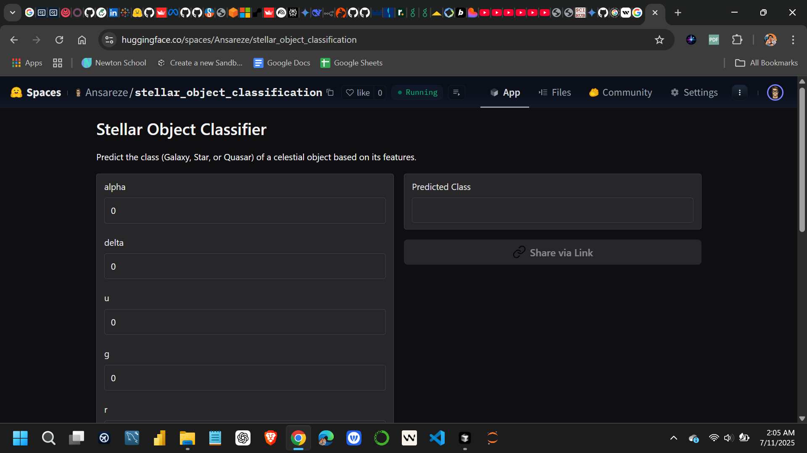
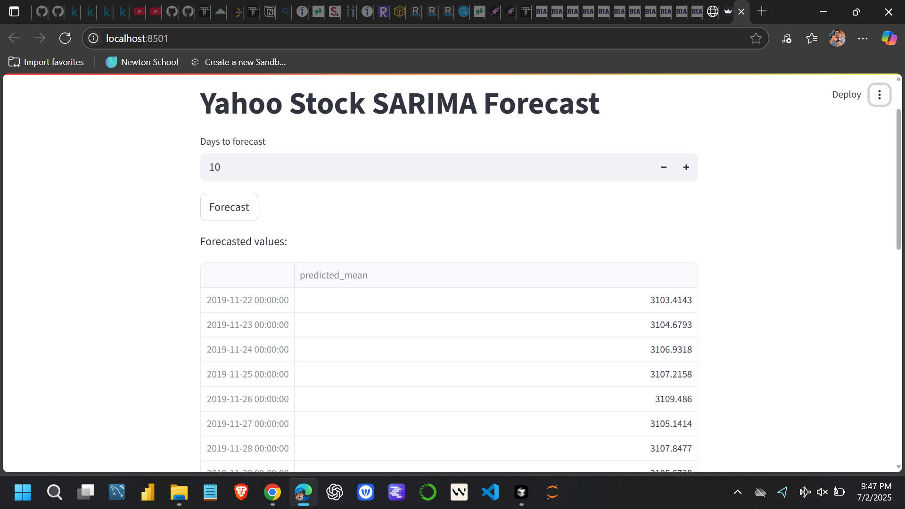
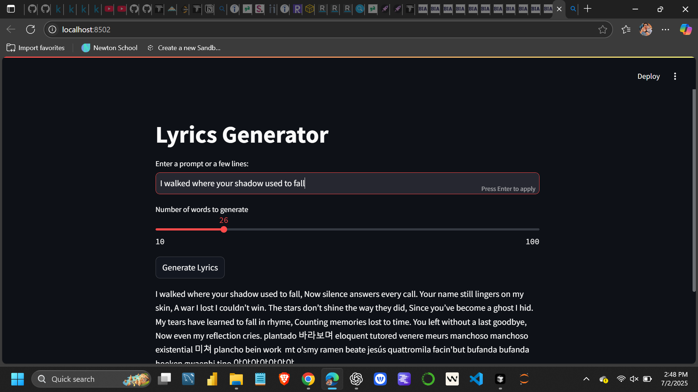
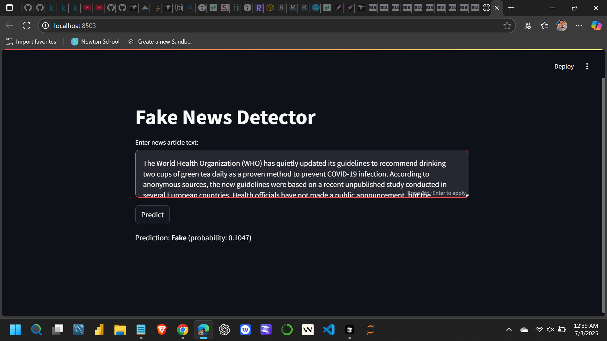

I'm a data science practitioner with a multidisciplinary foundation in Mechatronics Engineering and academic training in Life Sciences (Botany). This unique blend allows me to approach problems at the intersection of engineering, biology, and computation with a systems-thinking mindset.
My journey into data science has been fueled by deep curiosity and a drive to build practical, impactful solutions. I've built end-to-end projects in machine learning, natural language processing, and time series forecasting — including a fake news detector, an RNN-based lyrics generator, and a stock price predictor.
My background in education and research has sharpened my ability to communicate complex concepts clearly — whether teaching high school mathematics or analyzing planetary data at Abyom SpaceTech.
I'm proficient in Python, SQL, scikit-learn, Keras, Pandas, Tableau, and Power BI. Currently expanding through training at the Boston Institute of Analytics and the IBM Data Science Professional Certificate.
I believe in lifelong learning, cross-disciplinary thinking, and building systems that balance precision with creativity. Long term, I aim to apply AI to challenges in education, automation, and ecological sustainability.







I'm always open to discussing data science, collaboration opportunities, or just connecting. Feel free to reach out through any of the platforms below.
Email
ansarishakeel006@gmail.com
Based in
Delhi, India
Currently
Open to Data Science roles & collaborations